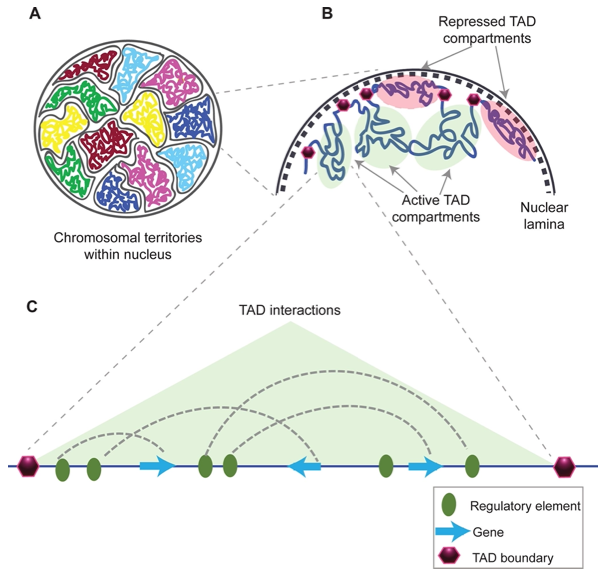
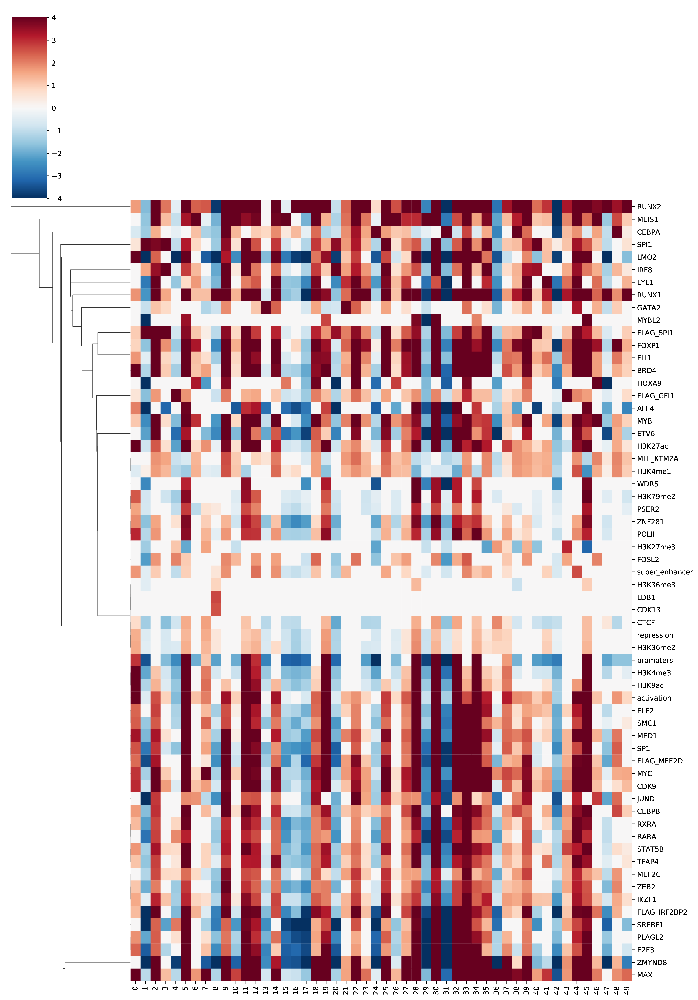
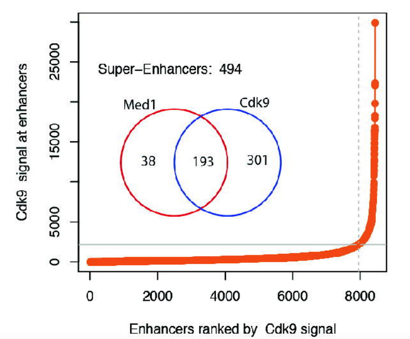
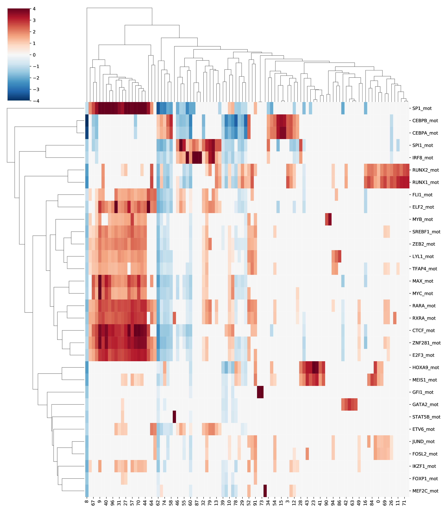
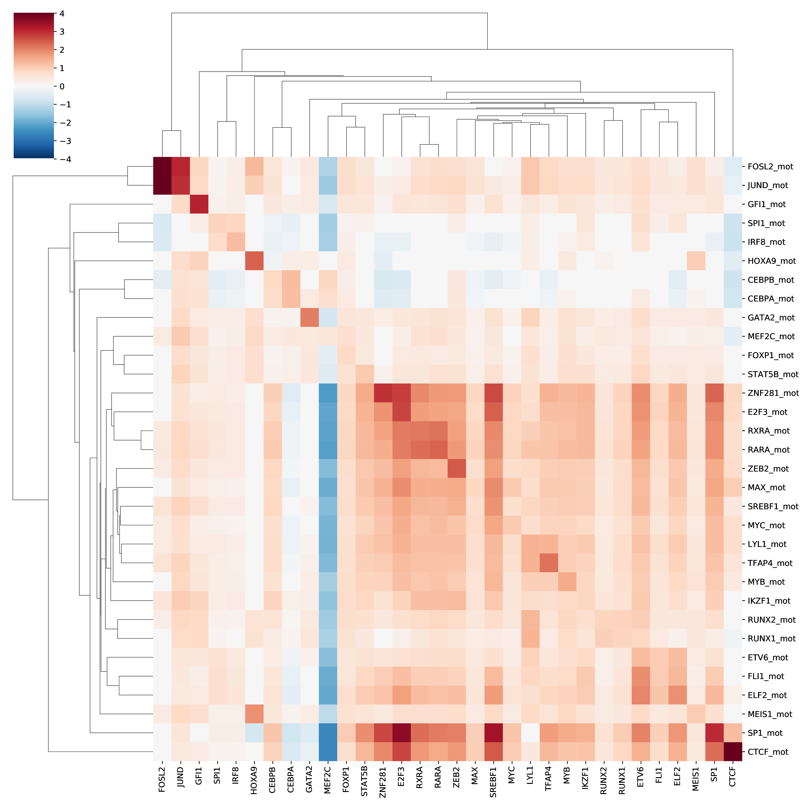

<!DOCTYPE html>
<html lang="en">
  <head>
    <meta charset="utf-8" />
    <meta name="viewport" content="width=device-width, initial-scale=1.0, maximum-scale=1.0, user-scalable=no" />

    <title>reveal-md deployed to gh-pages</title>
    <link rel="shortcut icon" href="./favicon.ico"/>
    <link rel="stylesheet" href="./dist/reveal.css" />
    <link rel="stylesheet" href="./dist/theme/black.css" id="theme" />
    <link rel="stylesheet" href="./css/highlight/zenburn.css" />
    <link rel="stylesheet" href="./_assets/custom.css" />

  </head>
  <body>
    <div class="reveal">
      <div class="slides"><section  data-markdown><script type="text/template">
# A look at the regulatory code
            
Jérémie Kalfon - CDS meeting - 02/02

</script></section><section ><section data-markdown><script type="text/template">
## Recap 📖

Just a quick recap of what was said in the earlier meeting.
</script></section><section data-markdown><script type="text/template">###  enhancer and TFs


  ➡ enhancers drive expression <!-- .element: class="fragment" data-fragment-index="1" -->
</script></section><section data-markdown><script type="text/template">### super enhancers & TADs.

<div class="r-stack">
  
  
</div>
</script></section><section data-markdown><script type="text/template">### Core Regulatory Circuitry & cell state.


</script></section><section data-markdown><script type="text/template">

</script></section></section><section ><section data-markdown><script type="text/template">
## What is the link with AML and dependencies 🤔
</script></section><section data-markdown><script type="text/template">### Many effective drugs in AML and Cancer target TFs

- [BET protein inhibitor JQ1 downregulates chromatin accessibility and suppresses metastasis of gastric cancer via inactivating RUNX2/NID1 signaling](https://www.nature.com/articles/s41389-020-0218-z)
- [Mission Possible: Advances in MYC Therapeutic Targeting in Cancer](https://link.springer.com/article/10.1007/s40259-019-00370-5) <!-- .element: class="fragment" data-fragment-index="1" -->
</script></section><section data-markdown><script type="text/template">

1. There is the famous theory of **cancer** as being in a **stem cell state** & reusing these stem cell states (immortality, fast division, proliferation) to become cancerous.
2. We know that we can create and revert stem cell states (Yamanaka Factors) by changing the epigenetics of cells. <!-- .element: class="fragment" data-fragment-index="1" -->

</script></section></section><section  data-markdown><script type="text/template">
## Intro

</script></section><section ><section data-markdown><script type="text/template">
### What I have:

(*Focusing on 1 cell line: MV411*)
</script></section><section data-markdown><script type="text/template">- hundreds of chipseq on MV411
- many replicates,
- good/bad qualities,
- different seq methods, different labs (anything I could find on SRA)
</script></section><section data-markdown><script type="text/template"><!-- .slide: data-background-color="rgb(255, 255, 255)"> -->

<iframe allowfullscreen data-src="https://docs.google.com/spreadsheets/d/1yFLjYB1McU530JnLgL0QIMAKIkVl3kl0_LCHje2gk8U#gid=738732237" style="width:100%; height:545px"></iframe>
</script></section><section data-markdown><script type="text/template">###  A set of CRCs:
</script></section><section data-markdown><script type="text/template">

CRCmapper: from gene expression + TF motifs + super enhancer bedfile + gene location, will compute the CRC.
</script></section><section data-markdown><script type="text/template">> Usually this is done with CRCmapper but the tool is not giving all CRC members based on their definition of CRC and what we know about that cell line.
</script></section><section data-markdown><script type="text/template"><!-- .slide: data-background-color="rgb(255, 255, 255)"> -->

 <!-- .img: class="r-stretch" data-fragment-index="0" -->
</script></section><section data-markdown><script type="text/template"><!-- .slide: data-background-color="rgb(255, 255, 255)"> -->

 

</script></section></section><section ><section data-markdown><script type="text/template">
### What I am using 👷:
</script></section><section data-markdown><script type="text/template">
</script></section><section data-markdown><script type="text/template">- Nextflow + GCP + NFcore ( + good file management 😅 )
- Bedtools + DeepTools + A package I built  with many epigenetic plot/helper functions <!-- .element: class="fragment" data-fragment-index="1" -->

</script></section></section><section ><section data-markdown><script type="text/template">
### First step:
</script></section><section data-markdown><script type="text/template"><iframe data-src="images/Chip_res_multiqc_multiqc_report_pe.html" style="width:100%; height:545px"></iframe>
</script></section><section data-markdown><script type="text/template">  - Frip score, read counts
  - Look at igv signal and found peaks 🔍
</script></section><section data-markdown><script type="text/template"><!---  -->
<!-- .slide: data-background-color="rgb(255, 255, 255)"> -->

<iframe allowfullscreen src="https://igv.org/web/release/2.7.4/embed.html?sessionURL=blob:tVTBbts6EPyVgKcWkEjJki3Lx5dDUjQFCgNtDkURUNKKYiORKknZcQz_e5ayA7.D6wRNahg.7Ix3hkPubskKjJVakQWZ0IymJCAGajCgSiCLLZEVIo1I5ggo3mGNXA8dVxcfrpaXTTJnHvuIYM2t49.WN57uXG8XjNmEVgNvsV7e08GGgJQwprzjj1rxtaWl7pgUK1oYzSuprJNucEC1EUyA0h1YZuH3KDH.0JqjklQVPPx7JfxKVCs3ThdcVX8piAr0WWHszpXSjjuM3DLf.z_s_akCTd2Do.KR7ALS6nKwKFY2JlvMpkEWzYMkn4WzWRDNJ0GaTtGXMyiNrB9b4ja9vxc8wDBeW0C0qcCQRZhHURbn.WSaZmmU5_Eu2JLBtEgW_hS8a3ujf0Hp2GUje1bqAsOVSrBizVkHRkB1IwvDzYYVUqylYF2fReGX72kch9fJ50nGy7tlTBG8leL4RF5g1dp03CFv3_RoOH2DwY6Xlo33.xX4_Wmjdz1Cdv8KPOsFxyfoR.u.6PGj..w94o2T2WvyPU_7Y8Dz9wz4lIdzCb.Sfy7i3Ps_NFxCjU_.4goU2P__DfcXTpwfg_1B3z6zqiwkqnml5zE9rCHA9VhjTwjISlpZyFa6zS1Ceo3jF_tl2ukVL1o0fOAdThJH4ycgDUjRoG8s7H7ungA-" style="width:100%; height:545px"></iframe>

</script></section></section><section ><section data-markdown><script type="text/template">
### Second step:
</script></section><section data-markdown><script type="text/template">##### A tool for merging chipseq replicate peakfiles
 
  - Computes which one is the best
    - from user defined annotations of quality
    - from overlap within replicates
  - Computes which ones are too bad to even be used
  - Plots important metrics: venn overlap, correlation.
</script></section><section data-markdown><script type="text/template"> 
</script></section><section data-markdown><script type="text/template">  - Confirms peaks under region where some replicates have peaks but not other
    - Using an algorithm similar to MACS2.
</script></section><section data-markdown><script type="text/template"><!---  -->
<!-- .slide: data-background-color="rgb(255, 255, 255)"> -->

<iframe src="https://igv.org/web/release/2.7.4/embed.html?sessionURL=blob:tVTBbts6EPyVgKcWkEjJki3Lx5dDUjQFCgNtDkURUNKKYiORKknZcQz_e5ayA7.D6wRNahg.7Ix3hkPubskKjJVakQWZ0IymJCAGajCgSiCLLZEVIo1I5ggo3mGNXA8dVxcfrpaXTTJnHvuIYM2t49.WN57uXG8XjNmEVgNvsV7e08GGgJQwprzjj1rxtaWl7pgUK1oYzSuprJNucEC1EUyA0h1YZuH3KDH.0JqjklQVPPx7JfxKVCs3ThdcVX8piAr0WWHszpXSjjuM3DLf.z_s_akCTd2Do.KR7ALS6nKwKFY2JlvMpkEWzYMkn4WzWRDNJ0GaTtGXMyiNrB9b4ja9vxc8wDBeW0C0qcCQRZhHURbn.WSaZmmU5_Eu2JLBtEgW_hS8a3ujf0Hp2GUje1bqAsOVSrBizVkHRkB1IwvDzYYVUqylYF2fReGX72kch9fJ50nGy7tlTBG8leL4RF5g1dp03CFv3_RoOH2DwY6Xlo33.xX4_Wmjdz1Cdv8KPOsFxyfoR.u.6PGj..w94o2T2WvyPU_7Y8Dz9wz4lIdzCb.Sfy7i3Ps_NFxCjU_.4goU2P__DfcXTpwfg_1B3z6zqiwkqnml5zE9rCHA9VhjTwjISlpZyFa6zS1Ceo3jF_tl2ukVL1o0fOAdThJH4ycgDUjRoG8s7H7ungA-" style="width:100%; height:545px"></iframe>
</script></section><section data-markdown><script type="text/template">  - We recover a peak if KL distance between poisson distribution of peak region to poisson from chromosome region is above a certain cutoff. Why I chose KL distance? is there better? 
  - This threshold and annotations might impact end results for some TF. Haven't tested this
</script></section><section data-markdown><script type="text/template">

</script></section></section><section  data-markdown><script type="text/template">
## Creating a cobinding matrix

I can show you what is a cobinding matrix by telling you how I made one.

</script></section><section ><section data-markdown><script type="text/template">
### How do you make a cobinding matrix?

> Peaks are stored in to a bed file (similar to what our segment cn file is)
</script></section><section data-markdown><script type="text/template">For all peaks across all our CRC members 

--> We are merging them together into a conscensus peak. 

<aside class="notes"><p>Changing the window size does not seem to drastically change the results.</p>
</aside></script></section><section data-markdown><script type="text/template">Conscensus peaks contain signal strength of each bound TF at each peak. 

We then add any additional TF peak/chromatin mark if they overlap with the conscensus peak.
</script></section><section data-markdown><script type="text/template"><!-- .slide: data-background-color="rgb(255, 255, 255)"> -->

 
</script></section><section data-markdown><script type="text/template"><!-- .slide: data-background-color="rgb(255, 255, 255)"> -->


</script></section><section data-markdown><script type="text/template">But why do we want to create a cobinding matrix? 🤔

</script></section></section><section ><section data-markdown><script type="text/template">
### Why do you make a cobinding matrix?

Now  we have a matrix of region bound by CRC TFs:
- How they co-bind, 
- with what intensity and
- what these regions are enriched for.
</script></section><section data-markdown><script type="text/template">#### Some questions that we could potentially want to ask are:
</script></section><section data-markdown><script type="text/template">1. What TF tend to bind with what other TF? what TF seems to recruit what other TF?
</script></section><section data-markdown><script type="text/template"><!-- .slide: data-background-color="rgb(255, 255, 255)"> -->

<!--  -->
<iframe allowfullscreen src="images/v3_motifs_150enrichment_correlation.html" style="width:100%; height:545px; self-align:center;"></iframe>
</script></section><section data-markdown><script type="text/template">2. How similar are TF in their binding profile on the cobinding matrix? do they recapitulate known biology?
</script></section><section data-markdown><script type="text/template"><!-- .slide: data-background-color="rgb(255, 255, 255)"> -->


</script></section><section data-markdown><script type="text/template"><!-- .slide: data-background-color="rgb(255, 255, 255)"> -->

<iframe allowfullscreen src="images/v3_150_remove_triple_scatter_plot_of_distance_of_TF_in_cobinding_space_scatter.html" style="width:100%; height:545px; self-align:center;"></iframe>
<!-- 
 -->
</script></section><section data-markdown><script type="text/template">3. Do we have unidirectional effects?
</script></section><section data-markdown><script type="text/template"><!-- 
 -->

</script></section><section data-markdown><script type="text/template">4. Do we see different types/clusters of consensus peaks/enhancers?
</script></section><section data-markdown><script type="text/template"><!-- .slide: data-background-color="rgb(255, 255, 255)"> -->

<iframe src="images/v3_remove_triple_150_density_plot_of_enhancers_in_TF_cobinding_space_with_TSNE_scatter.html" style="width:100%; height:545px; self-align:center;"></iframe>
</script></section><section data-markdown><script type="text/template"><!-- .slide: data-background-color="rgb(255, 255, 255)"> -->


<!-- 

 -->
</script></section><section data-markdown><script type="text/template">5. Can these typical cobinding can be code of recruitment
</script></section><section data-markdown><script type="text/template">
<!--  -->
</script></section><section data-markdown><script type="text/template">6. Can we find enriched cobinding codes?
</script></section><section data-markdown><script type="text/template">```json [2-4|5-7]
{"FOXP1": {
   "('HOXA9', 'MEIS1', 'RUNX1', 'FLI1')": [20.679007010467686, 1.573816075305904e-106],
   "('PLAGL2', 'MEIS1', 'RUNX1', 'FLI1', 'GATA2')": [20.1696768927937, 2.68122568917638e-103],
   "('PLAGL2', 'MEIS1', 'RUNX1', 'FLI1')": [19.475637226196504, 0.0],
   "('MEIS1', 'RUNX1', 'FLI1', 'SP1', 'STAT5B', 'ZMYND8')": [19.226043905414006, 1.5749712910441188e-75],
   "('MEIS1', 'FLAG_GFI1', 'RUNX1', 'FLI1', 'SP1', 'ZNF281')": [19.056081331233045, 1.1714495707236674e-47],
   "('MEIS1', 'FLAG_GFI1', 'RUNX1', 'FLI1', 'SP1', 'STAT5B')": [18.41054288274407, 9.997607773134669e-77],
   "('MEIS1', 'RUNX1', 'FLI1', 'LMO2', 'STAT5B', 'ZMYND8')": [18.18771957481308, 5.4013144733398546e-45],
   "('MEIS1', 'FLAG_GFI1', 'RUNX1', 'FLI1', 'STAT5B', 'ZMYND8')": [17.688363958697682, 1.3106147263223817e-65],
   "('RUNX1', 'FLI1', 'SP1', 'E2F3', 'ZNF281')": [16.38467742707984, 2.4277702377192912e-57],
   "('PLAGL2', 'MEIS1', 'FLAG_GFI1')": [15.836480078371327, 0.0],
   "('MEIS1', 'FLAG_GFI1', 'RUNX1', 'FOSL2')": [15.662574461952344, 2.1741337131721932e-106],
   "('HOXA9', 'MEIS1', 'FLAG_GFI1')": [15.592299578059071, 1.172983264863462e-74],
   "('MEIS1', 'RUNX1', 'FLI1', 'GATA2', 'SP1')": [15.130865677054896, 1.3708059294726692e-123],
   "('MEIS1', 'ETV6', 'RUNX1', 'FLI1')": [14.805683369077792, 0.0],
   "('PLAGL2', 'ETV6', 'RUNX1', 'FLI1')": [13.773310624415286, 3.824548342504144e-81],
   "('PLAGL2', 'MEIS1')": [13.66512116758237, 0.0],
   "('HOXA9', 'MEIS1', 'RUNX1')": [13.566690034445175, 2.643040787767258e-141],
   "('MEIS1', 'RUNX1', 'FLI1', 'ZMYND8', 'LYL1', 'MYC')": [13.419335791002378, 9.306447906612441e-48],
   "('MEIS1', 'FLAG_GFI1', 'RUNX1', 'FLI1')": [13.22999086817415, 0.0],
   "('HOXA9', 'MEIS1')": [12.462265699524325, 2.3799817303038663e-290],
   "('MEIS1', 'RUNX1', 'FOSL2', 'FLI1')": [12.259419734215175, 3.1791414332475183e-175],
   "('HOXA9', 'PLAGL2')": [11.619878874242964, 3.613713065304466e-70],
   "('FLAG_GFI1', 'RUNX1', 'FLI1', 'SP1', 'E2F3')": [11.61195175577594, 3.352601881340378e-49],
   "('MEIS1', 'RUNX1', 'FLI1', 'ZMYND8', 'MYC', 'RUNX2', 'MAX', 'IRF8')": [11.512184602113436, 1.1827012833358085e-59],
   "('MEIS1', 'RUNX1', 'FLI1', 'SP1', 'LMO2')": [11.035951727361278, 5.792481301005112e-108],
   "('MEIS1', 'ETV6', 'FLAG_GFI1')": [10.574935093401514, 5.090850453931399e-217],
   "('PLAGL2', 'RUNX1', 'FLI1', 'SP1')": [10.252263062952611, 5.405426104815049e-202],
   "('MEIS1', 'RUNX1', 'FLI1', 'GATA2', 'LMO2')": [10.047044565433609, 5.103404020283973e-46],
   "('MEIS1', 'RUNX1', 'FLI1', 'MYC', 'RUNX2', 'MAX', 'IRF8', 'MYB')": [9.949356056068048, 1.8545299028829085e-55],
   "('MEIS1', 'RUNX1', 'FLI1', 'SP1')": [9.767604893864384, 0.0],
   "('PLAGL2', 'MEIS1', 'RUNX1')": [9.636022201962357, 0.0],
   "('MEIS1', 'RUNX1', 'FLI1', 'GATA2')": [8.922880475192645, 1.1363260775421674e-293],
   "('PLAGL2', 'ETV6', 'FLAG_GFI1')": [8.838932924639, 5.824096964567232e-45],
   "('PLAGL2', 'FLAG_GFI1', 'RUNX1', 'FLI1')": [8.088051114566905, 3.0925216197984807e-136],
   "('MEIS1', 'FLAG_GFI1', 'RUNX1')": [7.795126477939785, 0.0],
   "('MEIS1', 'RUNX1', 'FLI1', 'ZMYND8', 'LYL1')": [7.754985230580703, 1.4272621213724028e-45],
   "('MEIS1', 'RUNX1', 'FLI1', 'STAT5B', 'MYC', 'RUNX2', 'MAX', 'IRF8')": [7.682301022729995, 3.5558673524461094e-44],
   "('MEIS1', 'RUNX1', 'FOSL2')": [7.458660977603613, 3.711464952718305e-193],
   "('MEIS1', 'RUNX1', 'FLI1', 'SP1', 'ZNF281')": [7.427817694449162, 4.882964490571714e-67],
   "('MEIS1', 'RUNX1', 'FLI1', 'LYL1', 'MYC', 'RUNX2', 'MAX')": [7.218809672676884, 9.04072943010931e-37],
   "('MEIS1', 'FLAG_GFI1', 'RUNX1', 'FLI1', 'STAT5B')": [7.142734561213435, 1.5698349018246675e-102],
   "('MEIS1', 'ETV6', 'RUNX1')": [7.090571290586961, 4.846097767202462e-266],
   "('MEIS1', 'RUNX1', 'FLI1', 'MYC', 'TFAP4', 'RUNX2', 'MAX', 'IRF8')": [6.6676391857756885, 9.29445497591486e-34],
   "('PLAGL2', 'ETV6', 'RUNX1')": [6.2671593799491285, 6.674826414437067e-59],
   "('MEIS1', 'RUNX1', 'FLI1')": [6.191277795015821, 0.0],
   "('MEIS1', 'RUNX1', 'FLI1', 'STAT5B', 'ZMYND8', 'MYC')": [6.067485318206496, 2.457608363944256e-36],
   "('MEIS1', 'RUNX1', 'FLI1', 'SP1', 'ZMYND8', 'MYC')": [5.519522276990812, 2.6664256406501734e-26],
   "('MEIS1', 'ETV6')": [5.457680123466818, 0.0],
   "('MEIS1', 'RUNX1', 'FLI1', 'LMO2', 'STAT5B')": [5.449737825103409, 3.5169014496253283e-44],
   "('MEIS1', 'RUNX1', 'FLI1', 'SP1', 'STAT5B')": [5.435003142735659, 4.062927651283253e-68],
   "('MEIS1', 'RUNX1', 'FLI1', 'LMO2', 'ZMYND8')": [5.1737826125500606, 1.1099207158377184e-30],
   "('MEIS1', 'FLAG_GFI1', 'RUNX1', 'FLI1', 'LMO2')": [5.1453400025038185, 2.488832187154986e-32],
   "('MEIS1', 'RUNX1', 'FLI1', 'STAT5B', 'ZMYND8')": [5.144133675845677, 8.328866668939355e-56],
   "('MEIS1', 'RUNX1', 'FLI1', 'ZMYND8', 'MYC', 'RUNX2', 'MAX')": [5.015683313800348, 1.7475620035909073e-36],
   "('MEIS1', 'RUNX1', 'FLI1', 'MYC', 'RUNX2', 'MAX', 'IRF8')": [4.837168880272548, 1.5442653945640561e-83],
   "('RUNX1', 'FLI1', 'SP1', 'E2F3')": [4.833240262441623, 4.818561803199518e-65],
   "('MEIS1', 'FLAG_GFI1', 'RUNX1', 'FLI1', 'STAT5B', 'MYC')": [4.702328953456831, 2.2930732335458664e-25],
   "('MEIS1', 'RUNX1', 'FLI1', 'SP1', 'ZMYND8')": [4.522823471650641, 4.7302696270405796e-37],
   "('PLAGL2', 'ETV6')": [4.455074183397641, 2.1065606034831624e-74],
   "('MEIS1', 'RUNX1', 'FLI1', 'GATA2', 'STAT5B')": [4.395268485020934, 9.075867601888572e-23],
   "('MEIS1', 'RUNX1')": [4.226570796146763, 0.0],
   "('MEIS1', 'FLAG_GFI1')": [4.067687024398289, 0.0],
   "('PLAGL2', 'FLAG_GFI1', 'RUNX1')": [3.9030871636555062, 7.918755418730449e-88],
   "('MEIS1', 'RUNX1', 'FLI1', 'LYL1', 'MYC', 'RUNX2')": [3.703370960021001, 1.1890919923555877e-20],
   "('MEIS1', 'FLAG_GFI1', 'RUNX1', 'FLI1', 'ZMYND8')": [3.6019501317049807, 3.65677317501736e-23],
   ...
```

<aside class="notes"><p>For each TF with known motifs, we look at the set of possible sets of cobinding CRC TF. for each set we compute its enrichment. we then display the most enriched sets. Issue: Due to the exponential complexity of computing each possible pvalues, we do not, the test is thus not BH corrected when it is on a set of 36,519,526 possible realizations. AAnd it is not chosen randomly</p>
</aside></script></section><section data-markdown><script type="text/template">How can I present this?

For now it is impossible to compute multiple hypothesis testing as I cannot compute every pvalues (combinatorial explosion).

</script></section></section><section ><section data-markdown><script type="text/template">
We have seen that we have many different reasons to make this cobinding matrix.
</script></section><section data-markdown><script type="text/template">In many ways it is about finding some relationship between CRC members, that would help us understand:
1. if some TFs are recruiting others.
</script></section><section data-markdown><script type="text/template">2. if there is some code that can explain

  - how super enhancers are created,
  - how histone marks get added,
  - how Mediator/polymerase gets recruited,
  - how genes get expressed
</script></section><section data-markdown><script type="text/template">3. What part of it is code and what part of it is noise from random binding of highly expressed TFs
</script></section><section data-markdown><script type="text/template">> But it seems we are maybe missing some important features in order to answer these questions.

</script></section></section><section ><section data-markdown><script type="text/template">
## Adding more features

Here I will present a couple of tools that I have used or I am planning to use to enrich the dataset with additional features.
</script></section><section data-markdown><script type="text/template">- ROSE
- ChromHMM
- MEME
- ABC model (WIP)
</script></section><section data-markdown><script type="text/template">- ROSE: computes super enhancer by stitching nearby enhancers and computing which ones are above a certain threshold. (you might have seen this feature already in some plots).


</script></section><section data-markdown><script type="text/template"><!--  -->


</script></section><section data-markdown><script type="text/template">

- ChromHMM: computes from many chromatin marks, the chromatin state of the genome by learning to pred ict the marks across the genome. State might be more meaningful than a bunch chromatin mark signal?
</script></section><section data-markdown><script type="text/template">

- MEME: motif analysis package
  - QCs and confirms ChIPseq data from looking a the motifs under peaks and comparing with known motifs for that TF
  - adds motifs to the conscensus peaks in the cobinding matrix.
  - we used it on a personalized genome (from CCLE WGS)
</script></section><section data-markdown><script type="text/template"><!--  -->


- ABC model: a tool to compute enhancer<->gene mapping from gene expression, H3K27ac ChIP-seq and HiC-seq. (still a WIP).
</script></section><section data-markdown><script type="text/template">### Additional questions
</script></section><section data-markdown><script type="text/template">1. What is the behavior now when we filter TF binding by motif only?
</script></section><section data-markdown><script type="text/template"><!--  -->


</script></section><section data-markdown><script type="text/template">Can we see differences with unfiltered data?
</script></section><section data-markdown><script type="text/template">2. Can we find interesting relationship between motif regions and TF binding?
</script></section><section data-markdown><script type="text/template">
</script></section><section data-markdown><script type="text/template">
</script></section><section data-markdown><script type="text/template">3. Can we see cobinding typical of superenhancer?
</script></section><section data-markdown><script type="text/template"><iframe src="images/v3_motifs_150enrichment_correlation.html" style="width:100%; height:545px; self-align:center;"></iframe>

for now we do not see anything that would help us in knowing that.
</script></section><section data-markdown><script type="text/template">4. Can we see new chromatin enrichment if we look at chromatin state?
</script></section><section data-markdown><script type="text/template">

for now chromHMM is not doing anything good as we are missing 2 marks it was trained on..

</script></section></section><section ><section data-markdown><script type="text/template">
## Discussions  

what is next
</script></section><section data-markdown><script type="text/template">1. Comparing the dataset and looking for interesting relationship and changes when filtering for motif/ changing some parameters, etc..
</script></section><section data-markdown><script type="text/template">2. See if some set of TF can predict binding of some other TF.
</script></section><section data-markdown><script type="text/template">3. Finish adding the ABC model:

  - adding gene set analysis to see if a TF or a set of TF refers to some known gene set.
  - seeing if some TF or set of TF explains some known dependencies. By regulating some key genes in AML. 
  - seeing if we can predict gene expression from TF binding signal? (of CRC genes at least).
</script></section><section data-markdown><script type="text/template">4. Incorporating differential binding data. Differential binding is doing chipseq of some TF after having done fast knock out of some other TF and computing the differential peaks (binding in condition only / in both / in control only).

  - to know how some TF are changing cobinding from dropping other TF.
  - see if some set of TF can predict it.
</script></section><section data-markdown><script type="text/template">5. Adding RNP data: our RNP dataset is composed of expression profile of our cell line 24h after fast knock out of each CRC members:

  - can we predict the differential expression of some gene types from the binding code of their associated enhancer?
  - can we find a relationship between differential binding profile of some TF after knock out and differential expression after some knock out?

</script></section></section></div>
    </div>

    <script src="./dist/reveal.js"></script>

    <script src="./plugin/markdown/markdown.js"></script>
    <script src="./plugin/highlight/highlight.js"></script>
    <script src="./plugin/zoom/zoom.js"></script>
    <script src="./plugin/notes/notes.js"></script>
    <script src="./plugin/math/math.js"></script>
    <script>
      function extend() {
        var target = {};
        for (var i = 0; i < arguments.length; i++) {
          var source = arguments[i];
          for (var key in source) {
            if (source.hasOwnProperty(key)) {
              target[key] = source[key];
            }
          }
        }
        return target;
      }

      // default options to init reveal.js
      var defaultOptions = {
        controls: true,
        progress: true,
        history: true,
        center: true,
        transition: 'default', // none/fade/slide/convex/concave/zoom
        plugins: [
          RevealMarkdown,
          RevealHighlight,
          RevealZoom,
          RevealNotes,
          RevealMath
        ]
      };

      // options from URL query string
      var queryOptions = Reveal().getQueryHash() || {};

      var options = extend(defaultOptions, {"controls":false,"slideNumber":false,"transition":"slide","backgroundTransition":"fade"}, queryOptions);
    </script>


    <script>
      Reveal.initialize(options);
    </script>
  </body>
</html>
